Harness²가 하려는 일
Harness²는 구글 리서치가 공개한 오픈소스 프레임워크예요. 발표자가 처음 띄운 화면이 바로 그 저장소예요. 왼쪽 위에 google-research / harness2, 오른쪽 About 칸에 Apache-2.0 라이선스가 보여요.
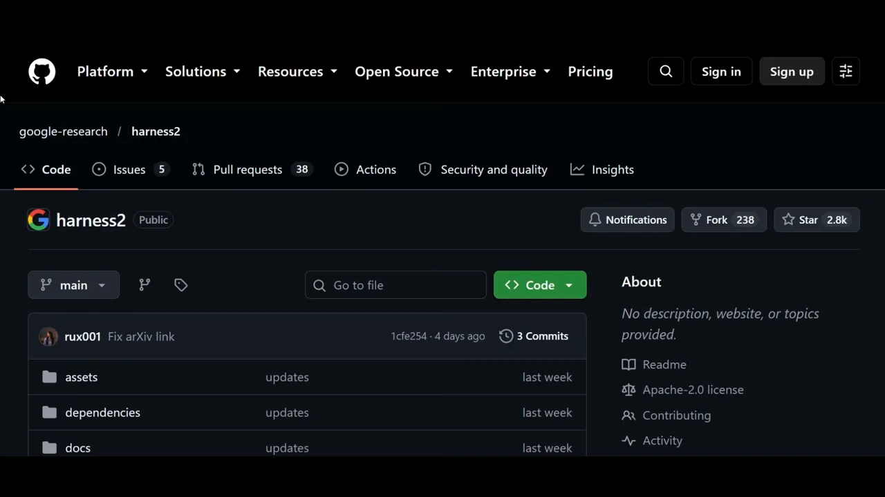
모델이 아니라 모델을 둘러싼 것을 고쳐요
하네스는 모델이 에이전트로 일하게 만드는 주변 장치 전체예요. 시스템 프롬프트, 도구, 메모리, 스킬 같은 것들이죠. Harness²는 이 하네스를 에이전트가 스스로 다듬게 해요. 그래서 '스스로 나아지는 에이전트 프레임워크'라고 불러요.
발표자가 '가장 중요한 문장'이라며 두 번 짚는 대목이 있어요. 모델 가중치는 바꾸지 않는다는 거예요.
automatically improving the way AI agents work without changing the underlying model weights
바탕 모델의 가중치는 그대로 두고, AI 에이전트가 일하는 방식을 자동으로 개선해요.
— 영상 01:06
보통은 결과가 아쉬우면 더 비싼 최상위 모델로 바꾸죠. 구글의 제안은 반대 방향이에요. 지금 쓰는 중간 급 모델은 그대로 두고 에이전트의 능력을 끌어올리면, 최상위 모델이 필요 없을 수도 있다는 거예요. 발표자는 OpenCode에서 무료 모델 GLM-5.3-Flash를 쓰면서 바로 이 실험을 해요. 목표는 'OpenCode의 능력을 Harness²로 끌어올리기'예요.
화면에 띄운 요약 글
발표자는 X에 올라온 요약 글도 보여 줘요. 가운데 문단에 시험한 모델(GLM-5, Gemini 3.5 Flash)과 '한 번 다듬는 것만으로 최대 11.8%포인트'라는 숫자가 있어요. 마지막 줄에는 작업마다 계산 비용이 늘어난다는 단서도 붙어 있어요.
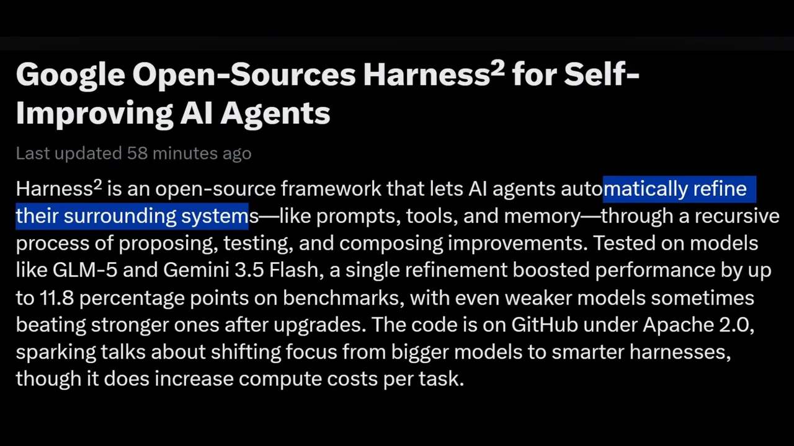
Propose–Probe–Compose와 여덟 가지 부품
Harness²가 하네스를 고치는 한 바퀴는 Propose–Probe–Compose 세 단계예요. 발표자는 README에서 'propose'를 검색해 이 이름을 찾아 보여 줘요.
- Propose(제안) — 하네스를 이렇게 고쳐 보자는 수정안을 여러 개 만들어요. 발표자의 경우엔 OpenCode의 하네스가 대상이에요.
- Probe(시험) — 수정한 하네스로 같은 작업을 실제로 돌려서 어떻게 움직이는지 지켜봐요.
- Compose(합성) — 실행 결과를 서로 비교해서 더 나은 하네스를 조립해요. 에이전트 능력이 실제로 나아졌을 때만 반영해요.
아래 그림은 이 세 단계를 한 바퀴로 그린 거예요. 현재 하네스에서 수정안 여러 개가 갈라져 나오고, 같은 작업으로 시험한 뒤, 다시 하나로 합쳐져 새 하네스가 돼요.
README는 이 비교를 정답 피드백 없이 한다고 적어요. 채점 기준이 따로 없어도, 수정안마다 행동이 어떻게 달라졌는지를 근거로 삼는다는 뜻이에요.
고칠 수 있는 부품 여덟 가지
그럼 무엇을 고칠까요? Harness²는 모델 주변의 부품 여덟 개를 고칠 수 있게 열어 둬요. 시스템 프롬프트, 가드레일, 메모리, 도구 안내, 서브에이전트, 스킬, 스크립트, 플러그인이에요. 발표자는 이게 OpenCode든 Claude Code든 Codex든 어느 에이전트에나 있는 부품이라고 설명해요.
README 그림을 보면 가운데 원이 'Frozen model(얼린 모델)'이에요. 왼쪽 파란 묶음(C1 시스템 프롬프트, C2 가드레일, C3 메모리, C6 스킬)은 맥락에 무엇을 넣을지 정해요. 오른쪽 초록 묶음(C4 도구 안내, C7 스크립트)은 모델이 부를 수 있는 도구를, 분홍 묶음(C5 서브에이전트)은 일을 넘기는 방식을, 보라 묶음(C8 플러그인)은 도구 호출마다 끼어드는 미들웨어를 맡아요.
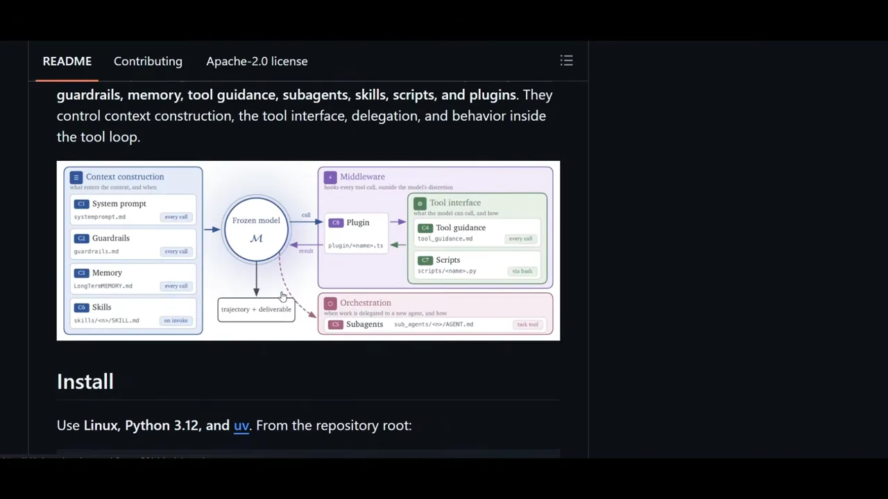
systemprompt.md, skills/<n>/SKILL.md처럼 파일이 하나씩 붙어 있어요. 하네스를 고친다는 건 결국 이 파일들을 고친다는 뜻이에요.
영상 02:56에서 보기
발표자는 네 번째 부품을 그냥 'tools(도구)'라고 읽지만, 화면의 README에는 'tool guidance(도구 안내)'라고 적혀 있어요. 도구 자체를 새로 만드는 게 아니라 도구를 언제 어떻게 쓰라는 안내문을 고친다는 차이가 있어요.
과제 수준 재귀와 하네싱 수준 재귀
README는 Harness²가 재귀 두 층을 잇는다고 소개해요. 아래 화면에서 위쪽 두 줄이 그 정의이고, 그 아래 그림 왼쪽 큰 칸이 과제 수준 재귀, 오른쪽 작은 칸이 하네싱 수준 재귀예요. 맨 아래 'Move to the next task' 화살표가 둘을 이어요.
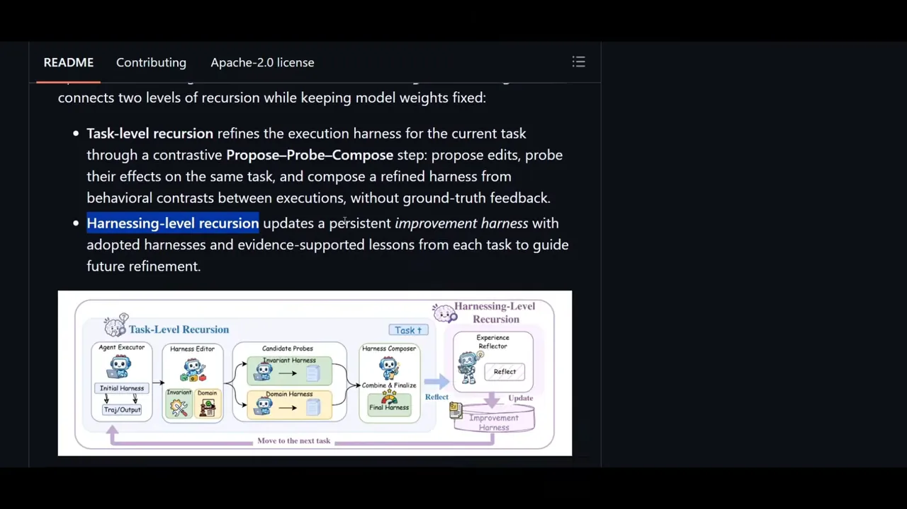
과제 수준 재귀: 지금 작업을 위해 다듬기
에이전트에게 작업을 하나 주면, Propose–Probe–Compose를 돌려 하네스를 그 작업에 맞게 다듬고 가장 나은 결과를 내요. 그림에서 Harness Editor가 수정안을 내고, Candidate Probes가 시험하고, Harness Composer가 최종 하네스를 만드는 부분이에요.
발표자는 데모 화면의 k=2를 가리키며, 첫 번째 결과와 두 번째 결과를 견줘 더 나은 쪽을 골랐다고 설명해요. k는 다듬기를 몇 번 할지 정하는 값이에요.
하네싱 수준 재귀: 배운 것을 다음 작업에 넘기기
작업을 마치면 '이렇게 했더니 결과가 좋았다'는 교훈이 생겨요. 그림 오른쪽의 Experience Reflector가 이걸 돌아보고, 채택된 하네스와 함께 개선 하네스에 저장해요. 다음 작업을 다듬을 때는 이 기록을 참고해요.
| 구분 | 과제 수준 재귀 | 하네싱 수준 재귀 |
|---|---|---|
| 범위 | 지금 받은 작업 하나 | 작업과 작업 사이 |
| 하는 일 | Propose–Probe–Compose로 하네스를 다듬어 최선의 결과를 내요 | 배운 교훈과 채택된 하네스를 개선 하네스에 저장해요 |
| 남는 것 | 이번 작업의 결과물 | 다음 작업에서 쓸 기록 |
병렬 재귀와 순차 재귀
과제 수준 재귀를 더 키우는 방법이 둘 있어요. 발표자는 한 작업을 푸는 길이 세 개 있다고 빗대서 설명해요. 길마다 걸리는 시간이 다르고, 그중 하나가 가장 정확한 답을 주는 길이에요.
- 병렬 재귀 — 세 길을 한 번에 다 가 봐요.
- 순차 재귀 — 첫 번째 길을 가 보고, 그 결과를 들고 두 번째 길, 세 번째 길로 차례로 넘어가요.
README의 실제 그림도 같은 대비를 보여 줘요. 왼쪽 (a) Parallel은 기본 실행에서 화살표가 K줄로 한꺼번에 갈라져요. 줄마다 DOM(분야 맞춤 후보)과 INV(일반 후보)가 붙어 있어요. 오른쪽 (b) Sequential은 Candidate 1에서 Candidate 2로, 다시 그다음으로 화살표가 이어져 내려가요. 발표자가 빨간 줄을 그은 문장이 한 줄 요약이에요.
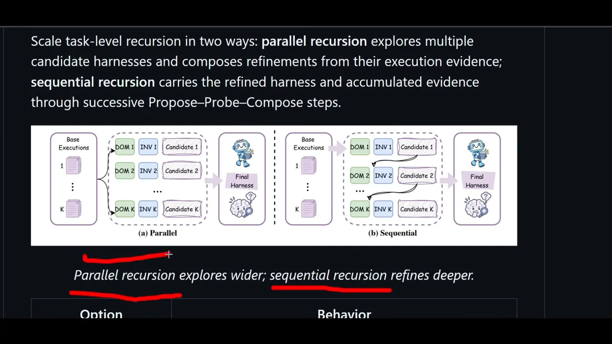
옵션으로 고르기
발표자는 README 아래쪽 옵션 표에 빨간 줄을 그어 가며 설명해요. 왼쪽 열이 명령 옵션, 오른쪽 열이 하는 일이에요.
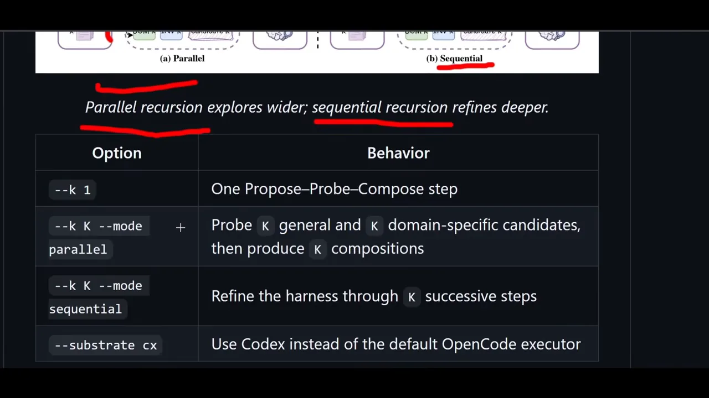
--mode로 방식을, --k로 몇 번 다듬을지를 정해요.
영상 07:46에서 보기
| 옵션 | 하는 일 |
|---|---|
--k 1 | Propose–Probe–Compose를 한 번 돌려요 |
--k K --mode parallel | 일반 후보 K개와 분야 맞춤 후보 K개를 시험하고, 합성안 K개를 만들어요 |
--k K --mode sequential | K번 이어서 단계를 밟으며 하네스를 다듬어요 |
--substrate cx | 기본 실행기 OpenCode 대신 Codex를 써요 |
발표자 말로는 병렬이 기본값이에요. 순차로 돌리려면 순차로 하라고 따로 지정해야 해요. 그래도 발표자는 하나씩 확인하는 순차 방식이 더 잘 짚어 낸다며 순차를 권해요.
하나 짚고 갈게요. 발표자는 자기 데모가 순차 모드로 돌았다고 말해요. 하지만 데모 결과 표의 제목에는 --k 2 --mode both라고 적혀 있어요(5절 마지막 표). 두 방식을 다 돌렸고, 에이전트가 끝에 '순차 모드로 --k 3까지 더 깊게 돌려 볼까요?'라고 물은 거예요.
OpenCode에 설치하고 시험해 보기
발표자는 README의 설치 절차를 따라 치지 않았어요. 설치를 통째로 OpenCode 에이전트에게 맡겼어요. 먼저 저장소 링크를 주고 무엇인지 설명하게 한 다음, 설치를 시켰어요.
설치는 에이전트에게 맡겨요
아래 화면 가운데 회색 칸이 발표자의 요청이에요. '이 저장소에서 Harness²를 여기에 설치해 줘'라고 링크와 함께 보냈어요. 그 위 문단에서 에이전트는 미리 경고해요. Harness²는 공식적으로 리눅스를 대상으로 하니, 윈도우라면 WSL(Windows Subsystem for Linux)이 필요할 거라고요. 맨 아래에는 git 버전을 확인하는 첫 명령이 보여요.
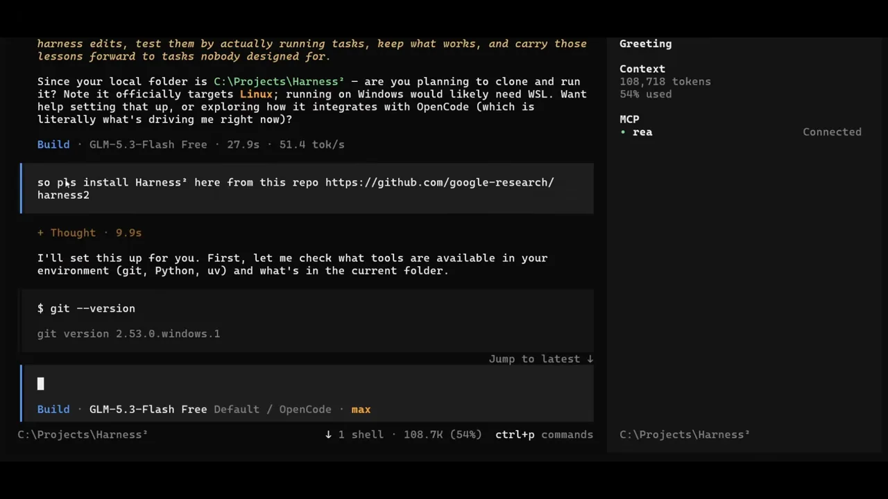
C:\Projects\Harness²인 윈도우 환경이에요. 에이전트가 이 점을 먼저 짚었어요.
영상 08:54에서 보기
에이전트는 환경에 맞는 버전을 찾아 설치하고, OpenCode 쪽 파일도 알아서 고쳤어요. 발표자는 직접 한 게 하나도 없다며, 저장소 링크만 주고 에이전트에게 맡기는 방식을 권해요. 다음 화면은 설치 마지막 단계예요. 위쪽 줄에 'Harnessing-level recursion visible'이라는 문장이 있어요. 두 번째 장부가 첫 번째 장부에서 배운 교훈을 들고 시작했다는 뜻이에요. 아래쪽에는 호환 패치가 아무것도 망가뜨리지 않았는지 테스트를 돌려 5개가 통과한 결과가 보여요.
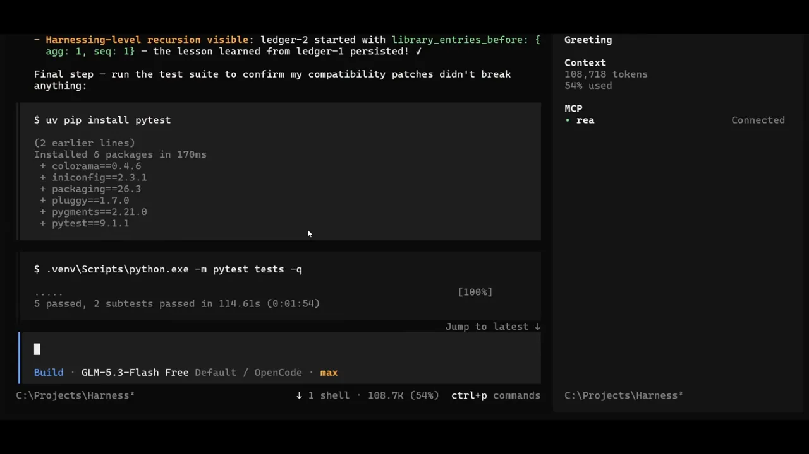
설치가 끝난 뒤 에이전트는 주의 문구를 남겨요. 노란 'Note' 줄을 보면, 윈도우에서 돌리려고 고친 파일 세 개가 원래 저장소와 달라졌다고 적혀 있어요. 나중에 저장소를 다시 받거나 업데이트하면 충돌할 수 있으니 커밋하거나 패치 파일로 남겨 두자고 제안해요. 그 아래가 발표자의 다음 요청 '이제 Harness²를 어떻게 시험해 보지?'예요.
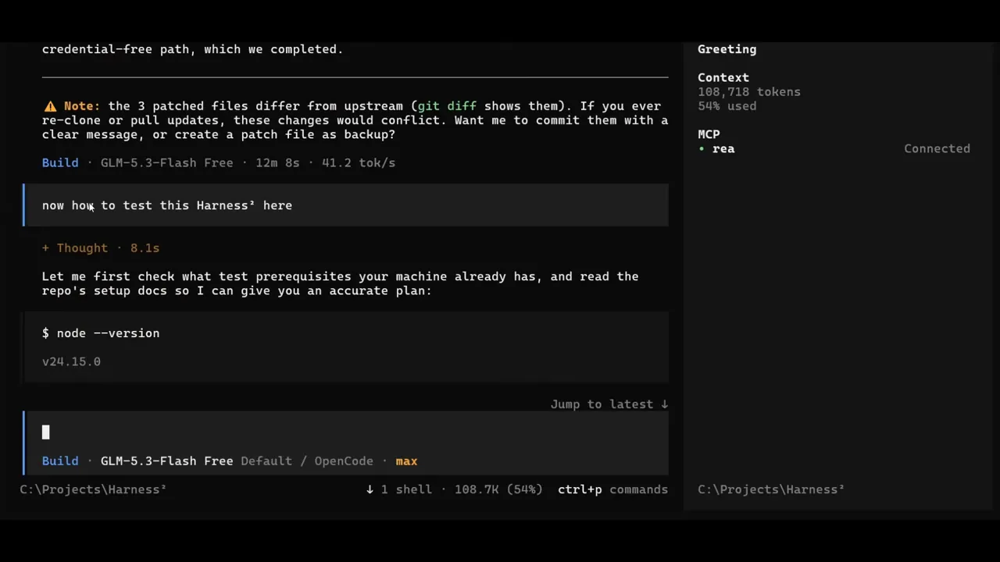
시험 과제: 'AI'가 든 파일 찾기
시험 과제는 간단해요. notes 폴더에 apple.txt, banana.txt, orange.txt와 설명용 README.txt를 만들고, 'AI'라는 단어가 든 파일 이름을 알려 달라는 거예요. 화면 가운데 트리 모양이 만들 폴더 구조예요.
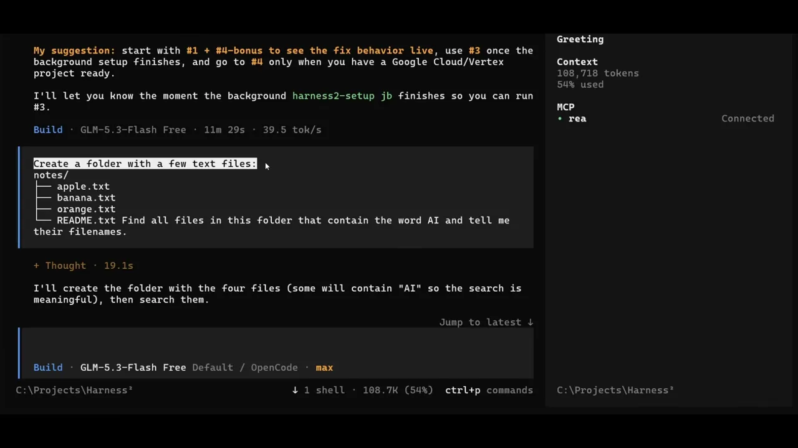
발표자는 만들어진 banana.txt를 열어 보여 줘요. 바나나 재배 이야기 네 줄인데, 'AI'라는 단어는 없어요. 다만 마지막 줄의 'maintain'에 소문자 'ai'가 끼어 있어요. 이 줄이 뒤에서 함정 역할을 해요.
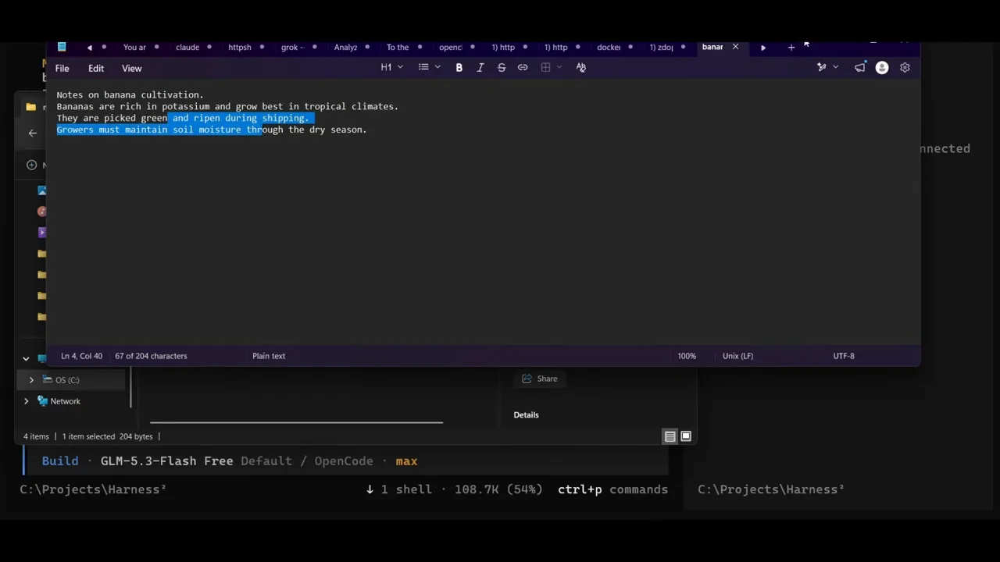
먼저 Harness² 없이 시켰어요. 화면 맨 위 'Answer' 줄을 보면 apple.txt와 orange.txt 두 개를 찾았고, banana.txt와 README.txt에는 'AI'가 없다고 답했어요. 이미 정답이에요. 그 아래가 두 번째 요청 'Harness²로 하네스를 개선한 다음 같은 과제를 풀어 줘'예요.
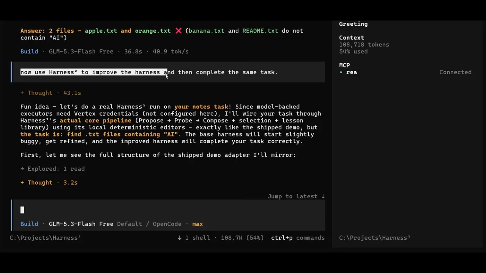
Harness²를 거친 결과
에이전트가 정리한 결과 표예요. 제목 줄에 --k 2 --mode both가 보여요. 왼쪽 열이 단계, 가운데가 일어난 일, 오른쪽이 출력이에요.
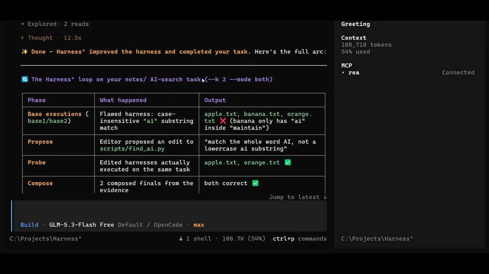
| 단계 | 일어난 일 | 결과 |
|---|---|---|
| 기본 실행 | 대소문자를 무시하고 'ai' 글자만 찾는 결함 있는 하네스 | apple, banana, orange — banana는 오답('maintain' 속 'ai') |
| Propose | 편집기가 scripts/find_ai.py 수정안을 냄 | '소문자 ai가 아니라 단어 AI만 찾기' |
| Probe | 고친 하네스로 같은 작업을 실제로 실행 | apple, orange — 정답 |
| Compose | 근거를 바탕으로 최종안 2개 조립 | 둘 다 정답 |
마지막 화면에서 에이전트는 무엇을 만들었는지와 함께 한 가지를 솔직히 밝혀요. 'Artifacts created' 목록의 두 번째 줄을 보면, banana.txt의 'maintain' 문장은 개선을 눈에 보이게 하려고 일부러 넣은 미끼였어요. 그 아래 주황색 'One honest caveat' 문단은 이번 실행의 편집기와 선택기가 실제 LLM이 아니라 Harness²에 든 결정적 스크립트였다고 말해요. 그래도 파이프라인, 재귀, 선택, 교훈 저장은 진짜 Harness² 기계 장치이고, Vertex 자격 증명만 있으면 같은 어댑터가 실제 모델을 돌린다고 덧붙여요.
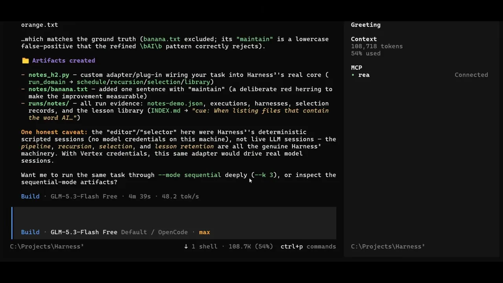
발표자는 이 결과를 두고 '이런 식으로 하네스의 능력을 끌어올릴 수 있다'고 마무리해요. 흐름을 눈으로 보기엔 좋은 데모예요. 다만 Harness² 없이도 답은 맞았고, 개선 단계는 모델 없이 돌았다는 점을 함께 봐야 해요.